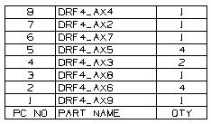
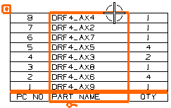
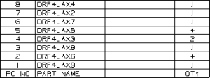
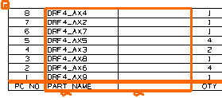
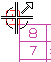
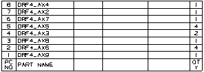

放大零件明细表。

点击中间列的顶部。
红线包围在列周围表明它已被选中。

|
注释 |
如果无法成功选择整个列，右击列中任一单元格并选择选择→列。 |
右击选定的列并选择镶块→在右侧插入列。
(译者注：NX 8.5中镶块的英文原文为 Insert，即为插入，此处不作修改。)

按 Esc 键以取消选择列。
再次点击 Part Name 列以选择它，然后拖动到右方选择相邻的空列。
现在两个列都已被选中。

右击选定的列并选择镶块→在右侧插入列。
添加了两个空列到右侧，因为您在前一步中选择了两个列。
点击零件明细表左上角的“加号”符号，并根据您的需要拖动它到图纸中合适的位置。

按 Esc 键以取消选择列。
选择 PART NAME 列右侧空列的右方竖直边，向左拖动光标，当光标标签变为表格注释列时，拖动直线直到列宽大约为1。
您的零件明细表看起来应该如下所示。
